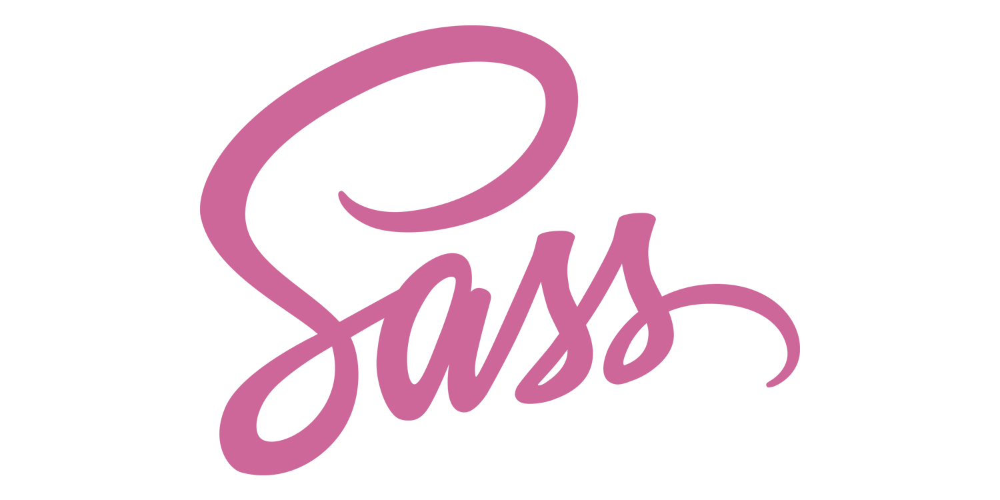
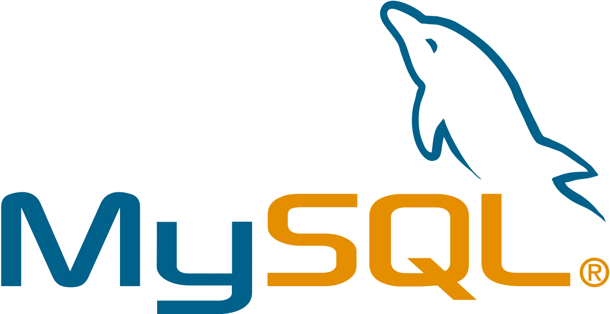

About
More About Me
Who I am
Data science & Web development
台大經濟系三年級。讀經濟系卻對個體、
總體經濟學沒有什麼興趣，對於經濟學的基本假設-人是理性的抱持著強烈懷疑。
業餘樂團主唱，喜歡徒手健身，吃雞胸肉。早上六點半帶著柴柴teddy，看台北六點半的天空，
享受每天早上的一杯黃金曼巴。
資料科學和程式設計博大精深，身為一個大學生的好處，就是可以盡情去探索、吸收新知識與技術。 接觸程式語言的開始是Python，先在資料科學轉了一圈，現在一頭栽進網頁開發的世界，無法自拔。
I'm familiar with...




競賽經驗
2019 國泰大數據競賽 83名
預測保戶會不會買保險-經典二元分類問題，最後決定使用Decision tree。過程中發現資料嚴重unbalance，嘗試使用Hellinger Distance criterion來解決此問題。 最後預測準確度來到0.764769。
kaggle - Titanic: Machine Learning 前5％
工作經驗
DBS GTS, Summer Intern, Jul 2019 ~ Aug 2019
使用python 撰寫爬蟲、擷取並整理金融數據，建構時間序列預測模型，同時維修並改善舊有之爬蟲程式。